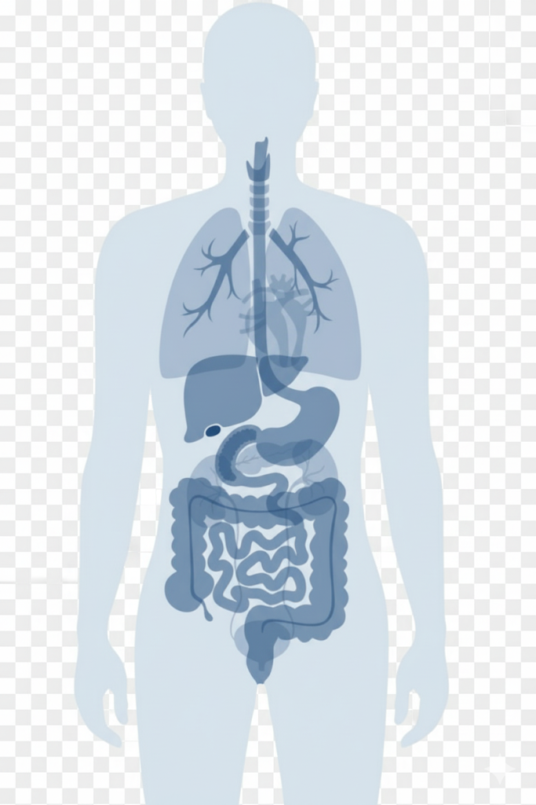

นางสาว สมใจ ใจดี
หญิง (Female) • DOB: 01 Jan 1979
HN: 01-25-00360
BloodGroup: N/A
Allergy: -
Weight
51.2 kg
BMI
20.0
BP
100 / 80
Pulse
60
โรคหลัก
💙 เบาหวาน (DM2)
❤️ ความดัน (HT)
🟠 ไขมัน (HLD)
Tap icon to view organ details

Latest Labs
Updated: 2024-05-01
HbA1c
6.8%
LDL
110 mg/dL
ALT
20 U/L
Chest X-ray

Impression
No active chest disease
HbA1c Trend
Patient Timeline (Disease Journey)
Start • Events • Current • Target
เบาหวานชนิดที่ 2 (DM2)
Goal: HbA1c < 7%
Diagnosis: 2019-03 • Last: 2024-05
Target
HbA1c < 7%
ความดันโลหิตสูง (HT)
Goal: BP < 130/80
Diagnosis: 2021-08 • Last: 2023-11
Target
BP < 130/80
ไขมันในเลือดสูง (HLD)
Goal: LDL < 100 mg/dL
Diagnosis: 2023-02 • Last: 2024-04
Target
LDL < 100
💡 Tip: คลิกไอคอนเหตุการณ์เพื่อดูรายละเอียด / กดปุ่ม Export เพื่อพิมพ์